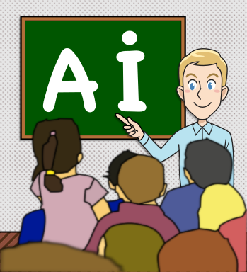
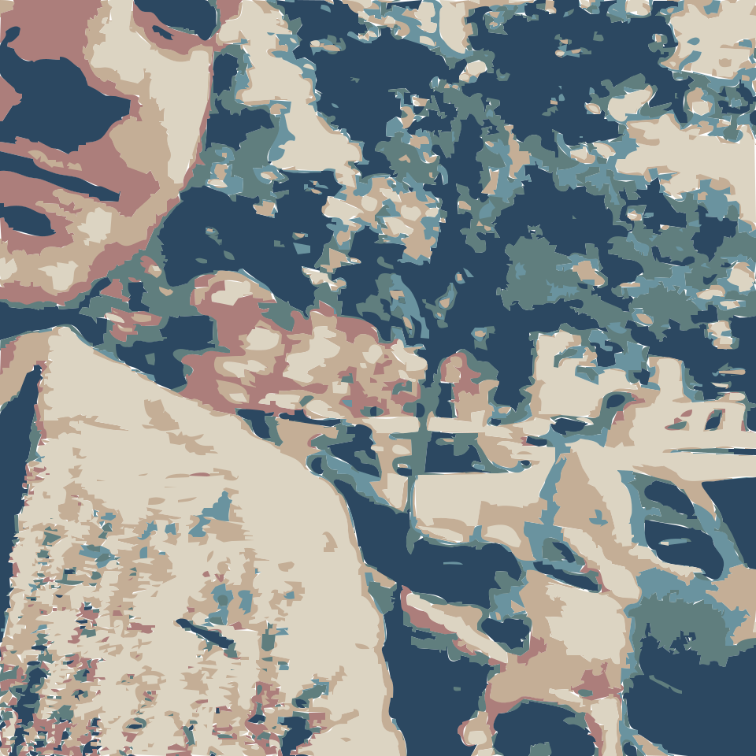
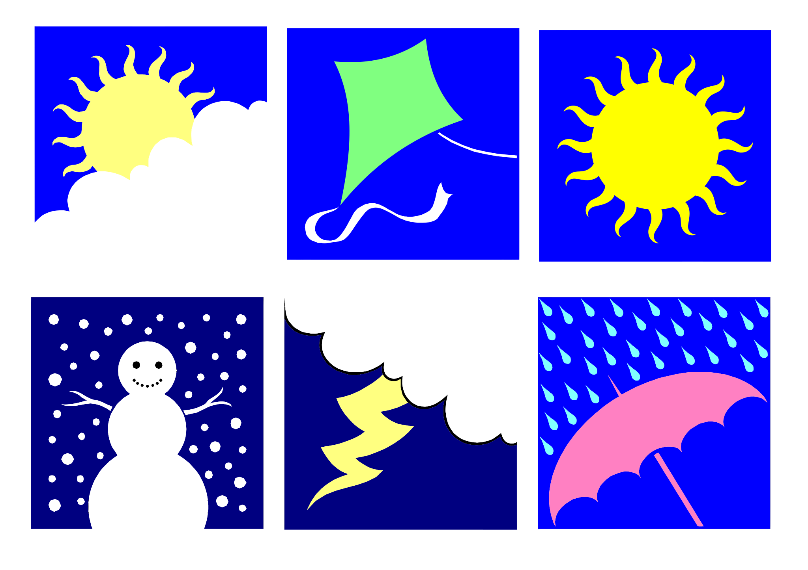
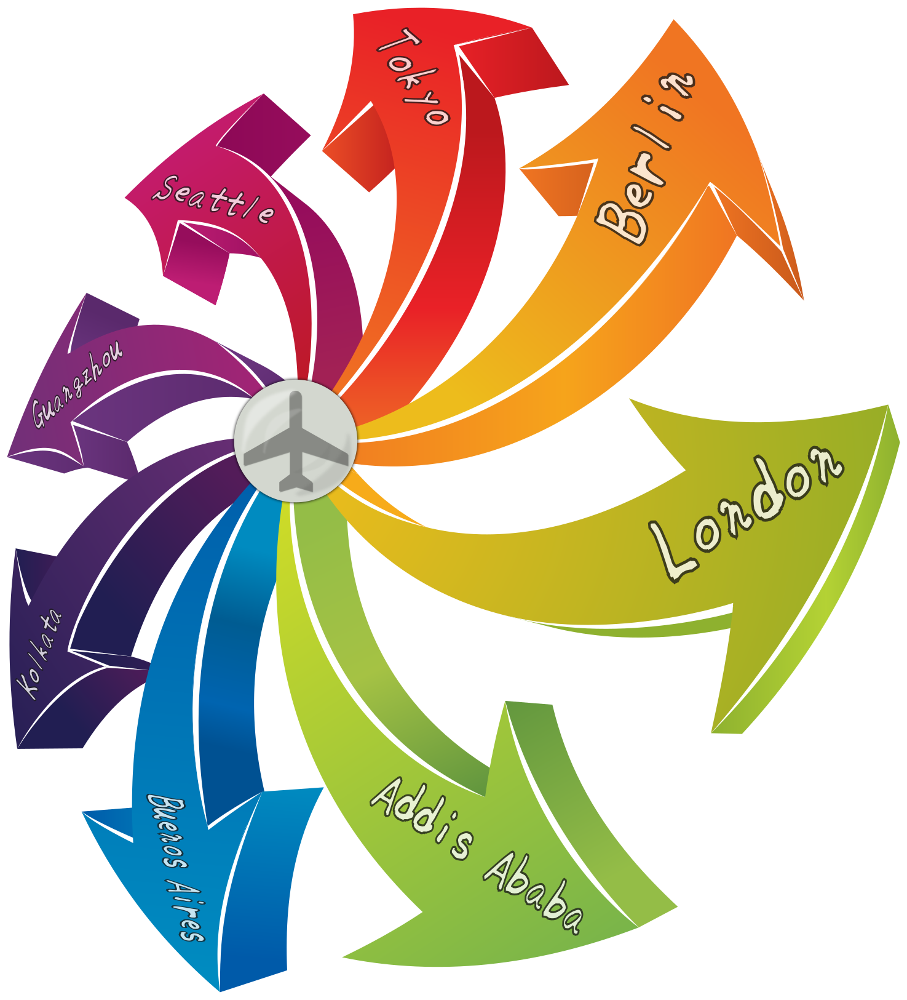

冀教版英语六年级 · 口语开口训练舱
六年级孩子说得清观点、讲得出理由、能连续表达一段
冀教版六年级关键练习豆包陪练
这是什么？
专为冀教版六年级孩子设计的英语开口训练舱，起点 S3-S4。8 个贴着小升初与成长话题的单元：初中准备、难忘的经历、敬佩的人、科技与日常、环保行动、志愿服务、梦想职业、毕业回忆。每单元 8 句核心句、1 段真实对话、1 个看图说话任务、1 个原创小故事，全部配豆包陪练指令。训练重点是"说成段、讲理由、能迁移"：围绕熟悉话题连续说 6-10 句，用上一般过去时、be going to 和比较级，每天 15 分钟。
适合谁
怎么用（3 步）
- 打开本页，选一个单元
- 先看中文说出英文，再听句子跟读 3 遍
- 复制该单元豆包指令，让豆包追问到底，孩子说完理由和细节才算过，每天 15 分钟
单元 1 · 初中准备
Getting Ready for Middle School
目标：会说出初中生活的变化和自己要做的准备，能用 be going to 讲计划，并说清紧张和期待的理由
🎬 示例视频
🎧 示例对话音频
🔑 核心句（关键练习）
- I am going to start middle school this coming September.今年九月我就要上初中了。
- We will study more subjects than we did in primary school.我们初中的科目会比小学时更多。
- I feel a little nervous, but I am also very excited.我有点紧张，但同时也非常兴奋。
- My new school is much bigger than my primary school.我的新学校比我的小学大得多。
- I am going to get up thirty minutes earlier every morning.我打算每天早上早起三十分钟。
- What are you going to do to prepare for middle school?你打算为上初中做些什么准备？
- My mother bought me a new school bag yesterday evening.我妈妈昨天晚上给我买了一个新书包。
- I want to make more friends in my new class.我想在新班级里交更多朋友。
📚 本单元词汇
middle school 初中
subject 科目
timetable 课程表
prepare 准备
nervous 紧张的
confident 自信的
uniform 校服
challenge 挑战
routine 作息
friend 朋友
词汇例句
- I am going to start middle school this September.
- We will study more subjects in middle school next year.
- My new timetable has four classes every morning.
- I am going to prepare my new bag this evening.
- I feel a little nervous about my new school life.
- My teacher says I should be confident and brave.
- Our new uniform is blue and white this year.
- Learning three new subjects is a big challenge for me.
- I need a new morning routine for middle school.
- I am going to make more friends in my new class.
💬 情景对话
Mum
You are going to start middle school next month, Li Ming.李明，你下个月就要上初中了。
Li Ming
Yes. I feel a little nervous about the new subjects.是的。新科目让我有点紧张。
Mum
That is normal. What are you most worried about?这很正常。你最担心的是什么？
Li Ming
I am worried that the homework will be much heavier.我担心作业会重很多。
Mum
We are going to make a new timetable together tonight.我们今晚一起做一张新的作息表吧。
Li Ming
Good idea. I am going to get up thirty minutes earlier.好主意。我打算早起三十分钟。
Mum
And I am going to buy you a bigger school bag.我还要给你买一个更大的书包。
Li Ming
Thank you, Mum. I am ready for this new challenge.谢谢妈妈。我已经准备好迎接这个新挑战。
🖼️ 看图说话任务（P1–P5 分层）

图片描述：一张准备上初中的书桌：桌上摊开一张写着九门科目的新课表，旁边叠着一套蓝白色校服和一个新书包，书立上摆着几本新课本，墙上贴着一张写着 Middle School, Here I Come 的彩纸。
| 可见事实 | 合理推断 |
|---|---|
| 桌上摊开着一张新课表 | Maybe the child is a little excited, because the paper on the wall says so. |
| 旁边叠着一套蓝白色校服 | I think middle school will be busier, because the timetable has more subjects. |
| 桌边放着一个新书包 | |
| 书立上摆着几本新课本 | |
| 墙上贴着一张写着 Middle School, Here I Come 的彩纸 |
个人联想：What are you going to do before your first day of middle school?
无法确认：我们看不出课表上的具体时间，也看不清课本的书名
本单元语言点：be going to 说计划 + 比较级说变化
观察路线：整体场景：一张准备上初中的书桌 → 人物：即将上初中的孩子 → 动作：贴彩纸、叠校服、整理新课本 → 位置：课表在桌上，彩纸在墙上 → 关键细节：蓝白色校服和写着 Middle School 的彩纸 → 合理推断：Maybe... / I think... because → 个人回应：说说自己开学前要做的准备
| 层级 | 任务要求 |
|---|---|
| P1 | 说出初中准备的东西：timetable、uniform、school bag、textbooks |
| P2 | 用句框说 3-4 句：There is a ___ on the desk. / I am going to ___. |
| P3 | 只看关键词 timetable / uniform / bag / subjects / excited，说 5-6 句 |
| P4 | 按"桌面—校服—书包—墙上"的顺序说 6-8 句，用上一个比较级和一个 I think... because |
| P5 | 独立说完，再回答两个追问：What are you going to do first? Why? |
句框：There is a new ___ on the desk.
I am going to ___ before the new term.
Middle school is ___er than primary school.
I think the child feels ___, because ___.
I am going to ___ before the new term.
Middle school is ___er than primary school.
I think the child feels ___, because ___.
提问阶梯：What can you see on this desk?
Where is the new school uniform?
What does the paper on the wall say?
How does the child feel about middle school? Why?
What are you going to change in your daily routine?
Where is the new school uniform?
What does the paper on the wall say?
How does the child feel about middle school? Why?
What are you going to change in your daily routine?
| 维度 | 达标 | 需要支持 |
|---|---|---|
| 事实准确 | 说的都是图里能看到的东西 | 凭空加没看到的细节 |
| 顺序清楚 | 按从桌面到墙面依次说 | 跳来跳去 |
| 句子完整 | 用 I am going to 和比较级完整句 | 只说单词 |
| 推断有证据 | 用 Maybe / I think... because 说明 | 直接下结论不给理由 |
📖 故事复述与表达（L1–L5 支架）
The New Timetable
Jenny found the new timetable on her desk last night.
It showed nine subjects and two evening study hours.
She felt nervous and wanted to hide the paper away.
Her brother sat down and read every line with her.
They coloured maths blue and English green with two pens.
Jenny saw that her day still had time for drawing.
She went to bed early and slept very well that night.
Jenny found the new timetable on her desk last night.
It showed nine subjects and two evening study hours.
She felt nervous and wanted to hide the paper away.
Her brother sat down and read every line with her.
They coloured maths blue and English green with two pens.
Jenny saw that her day still had time for drawing.
She went to bed early and slept very well that night.
中文大意：珍妮昨晚在桌上发现了新的课程表，上面有九门科目和两个晚自习。她很紧张，想把纸藏起来。哥哥坐下来和她一起逐行读，他们用两支笔把数学涂成蓝色、英语涂成绿色。珍妮发现自己的一天里还有画画的时间。那晚她早早上床，睡得很香。
| 故事地图 | 内容 |
|---|---|
| 人物与情境 | 珍妮和她的哥哥 |
| 想要什么 | 想看明白初中的新课表 |
| 遇到问题 | 科目变多，她紧张得想逃避 |
| 如何解决 | 哥哥陪她一行行读、一起标颜色 |
| 结果与变化 | 她发现还有画画的时间，安心睡了个好觉 |
事件顺序：Jenny found the new timetable on her desk. → She felt nervous and wanted to hide it. → Her brother sat down and read it with her. → They coloured the subjects with two pens. → She saw time for drawing in her day. → She slept very well that night.
排序练习（顺序已打乱）：She felt nervous and wanted to hide it.
Jenny found the new timetable on her desk.
She slept very well that night.
Her brother sat down and read it with her.
Jenny found the new timetable on her desk.
She slept very well that night.
Her brother sat down and read it with her.
关键词：timetable / subjects / nervous / brother / coloured / drawing
| 支架 | 做法 |
|---|---|
| L1 | 看图跟读关键句：She found the new timetable on her desk. |
| L2 | 用句框补科目和感受：She felt ___ when she saw nine ___. |
| L3 | 只看关键词 timetable / nervous / brother / coloured / drawing，按顺序说完整句 |
| L4 | 看着故事地图（谁—想做什么—问题—结果）自己讲一遍 |
| L5 | 只看标题《The New Timetable》独立复述，并加一句自己开学前要做的事 |
连接词句框：First, Jenny found the new ___ on her desk.
Then, she felt ___ and wanted to hide it.
After that, her brother ___ it with her.
Finally, she slept ___ that night.
Then, she felt ___ and wanted to hide it.
After that, her brother ___ it with her.
Finally, she slept ___ that night.
迁移表达：
换视角：换成哥哥的视角讲：My sister found her new timetable last night.
说感受：珍妮为什么能睡着？从故事里找一句证据
新结局：如果课表上没有画画的时间，故事会怎么变？
换视角：换成哥哥的视角讲：My sister found her new timetable last night.
说感受：珍妮为什么能睡着？从故事里找一句证据
新结局：如果课表上没有画画的时间，故事会怎么变？
🤖 豆包陪练指令（本单元）
请你扮演一位刚上初中的学长，和我六年级的孩子练习"初中准备"。规则：1）每次只问一个问题，问完等他回答，再追问 Why? 或 Can you say more?；2）答对先用中文夸具体的地方，再说下一句；3）答不出先给中文提示，还不行给完整句让他跟读两遍；4）引导他用 be going to 说计划、用比较级说变化；5）句子有语法错误不要说"错"，把正确句子完整说一遍让他跟读；6）最后用中文总结：他最能说清的是哪一段、哪一句明天还要练。
单元 2 · 难忘的经历
An Unforgettable Experience
目标：会用一般过去时讲一次难忘的经历，能按时间顺序说清经过，并说出自己的感受和收获
🎬 示例视频
🎧 示例对话音频
🔑 核心句（关键练习）
- Last summer, I climbed a mountain with my father.去年夏天，我和爸爸爬了一座山。
- The sunrise was more beautiful than anything in my photos.日出比我照片里的任何景色都美。
- I was so tired that I wanted to stop halfway.我累得半路就想停下来。
- My father told me to take a short rest and go on.爸爸让我休息一小会儿再继续。
- We reached the top of the hill at six in the morning.我们早上六点到达了山顶。
- It was the most unforgettable experience of my primary school life.那是我小学生活里最难忘的一次经历。
- Have you ever watched the sunrise from a high mountain?你曾经在高山上看过日出吗？
- I took many photos, but I remember the view better.我拍了很多照片，但我更记得那片景色。
📚 本单元词汇
experience 经历
remember 记得
climb 攀登
sunrise 日出
wonderful 精彩的
surprise 惊喜
trip 旅行
photo 照片
unforgettable 难忘的
courage 勇气
词汇例句
- That mountain trip was the best experience of my life.
- I still remember the cold morning on the mountain.
- We climbed the small hill before the sun came up.
- The sunrise over the clouds looked like a red sea.
- It was a wonderful day for our whole family.
- My parents planned a small surprise for my birthday.
- Our school trip to the mountain took about six hours.
- This old photo always makes me smile at once.
- That was the most unforgettable day of my primary school.
- That day taught me a lesson about courage and patience.
💬 情景对话
Miss Zhang
Who would like to share an unforgettable experience with us?谁愿意和大家分享一次难忘的经历？
Li Ming
I climbed a mountain with my father last summer.去年夏天我和爸爸爬了一座山。
Miss Zhang
That sounds wonderful. How long did it take you?听起来很棒。你们花了多长时间？
Li Ming
About six hours. I wanted to stop halfway up the mountain.大约六个小时。爬到半山腰我想放弃了。
Miss Zhang
What made you keep going at that difficult moment?在那样困难的时候，是什么让你坚持下来的？
Li Ming
My father walked beside me and told me old stories.爸爸走在我身边，给我讲老故事。
Wang Mei
Did you watch the sunrise from the top of the mountain?你们在山顶看日出了吗？
Li Ming
Yes, we did. It was more beautiful than any photo.看了。比任何照片都美。
🖼️ 看图说话任务（P1–P5 分层）

图片描述：一张山顶日出的照片：几个孩子站在山顶的石头上，太阳刚从云海后面升起，天空是橙红色的，其中一个孩子举着相机，石头上放着一个背包和一壶水。
| 可见事实 | 合理推断 |
|---|---|
| 几个孩子站在山顶的石头上 | Maybe they started climbing very early, because the sun is just coming up. |
| 太阳刚从云海后面升起 | I think they felt proud, because they reached the top before sunrise. |
| 天空是橙红色的 | |
| 一个孩子举着相机 | |
| 石头上放着一个背包和一壶水 |
个人联想：What is the most unforgettable experience in your life so far?
无法确认：我们看不出他们爬了多久，也听不到他们在说什么
本单元语言点：一般过去时讲经历 + 比较级说感受
观察路线：整体场景：山顶的日出 → 人物：几个爬到山顶的孩子 → 动作：拍照、看日出、放下背包 → 位置：孩子在石头上，太阳在云海后面 → 关键细节：橙红色的天空和举起的相机 → 合理推断：Maybe... / I think... because → 个人回应：说说自己最难忘的一次经历
| 层级 | 任务要求 |
|---|---|
| P1 | 说出山和日出的词：mountain、top、sunrise、clouds、camera |
| P2 | 用句框说 3-4 句：They climbed the ___ last ___. / The sunrise was ___. |
| P3 | 只看关键词 mountain / top / sunrise / camera / tired，说 5-6 句 |
| P4 | 按"天空—云海—孩子—石头"的顺序说 6-8 句，用上一个比较级和一个 I think... because |
| P5 | 独立说完，再回答两个追问：When did they start climbing? How did they feel? |
句框：They climbed the mountain last ___.
The sunrise was more beautiful than ___.
I think they felt ___, because ___.
It took them about ___ hours to reach the top.
The sunrise was more beautiful than ___.
I think they felt ___, because ___.
It took them about ___ hours to reach the top.
提问阶梯：What can you see in this photo?
Where is the sun?
What is the child doing with the camera?
Do you think the climb was easy? Why?
What unforgettable experience do you want to share?
Where is the sun?
What is the child doing with the camera?
Do you think the climb was easy? Why?
What unforgettable experience do you want to share?
| 维度 | 达标 | 需要支持 |
|---|---|---|
| 事实准确 | 说的都是图里能看到的东西 | 凭空加没看到的细节 |
| 顺序清楚 | 按从天空到人物依次说 | 跳来跳去 |
| 句子完整 | 用一般过去时的完整句，动词过去式说准 | 只说单词或半句 |
| 推断有证据 | 用 Maybe / I think... because 说明 | 直接下结论不给理由 |
📖 故事复述与表达（L1–L5 支架）
The Last Hundred Steps
Li Ming climbed a mountain with his father last summer.
After three hours, his legs felt heavy and he sat down.
He said he could not walk another single step.
His father opened a bottle of water and waited quietly.
Then he told Li Ming to count one hundred steps aloud.
Li Ming counted loudly and forgot about his tired legs.
When he looked up, they were standing on the top.
Li Ming climbed a mountain with his father last summer.
After three hours, his legs felt heavy and he sat down.
He said he could not walk another single step.
His father opened a bottle of water and waited quietly.
Then he told Li Ming to count one hundred steps aloud.
Li Ming counted loudly and forgot about his tired legs.
When he looked up, they were standing on the top.
中文大意：去年夏天，李明和爸爸一起爬山。走了三个小时，他的腿沉得不行，一屁股坐下来说自己再也走不动了。爸爸打开一瓶水，安静地等着。然后他让李明大声数一百步。李明一边数一边忘了腿酸。等他抬起头，他们已经站在山顶了。
| 故事地图 | 内容 |
|---|---|
| 人物与情境 | 李明和他的爸爸 |
| 想要什么 | 想爬到山顶看日出 |
| 遇到问题 | 爬了三小时腿发沉，想放弃 |
| 如何解决 | 爸爸让他大声数一百步 |
| 结果与变化 | 数着数着就到了山顶 |
事件顺序：Li Ming climbed a mountain with his father. → His legs felt heavy after three hours. → He said he could not walk any more. → His father told him to count one hundred steps. → He counted and forgot about his tired legs. → They reached the top of the mountain.
排序练习（顺序已打乱）：They reached the top of the mountain.
Li Ming climbed a mountain with his father.
His legs felt heavy after three hours.
His father told him to count one hundred steps.
Li Ming climbed a mountain with his father.
His legs felt heavy after three hours.
His father told him to count one hundred steps.
关键词：mountain / father / heavy / steps / counted / top
| 支架 | 做法 |
|---|---|
| L1 | 看图跟读关键句：He counted one hundred steps aloud. |
| L2 | 用句框补人物和感受：His legs felt ___ after ___ hours. |
| L3 | 只看关键词 mountain / father / heavy / steps / top，按顺序说完整句 |
| L4 | 看着故事地图（谁—想做什么—问题—结果）自己讲一遍 |
| L5 | 只看标题《The Last Hundred Steps》独立复述，并加一句自己坚持下来的一件事 |
连接词句框：First, Li Ming climbed a mountain with his ___.
Then, his legs felt ___ after three hours.
After that, his father told him to count ___ steps.
Finally, they were standing on the ___.
Then, his legs felt ___ after three hours.
After that, his father told him to count ___ steps.
Finally, they were standing on the ___.
迁移表达：
换视角：换成爸爸的视角讲：My son wants to stop halfway up the mountain.
说感受：李明为什么能走到山顶？从故事里找一句证据
新结局：如果爸爸背着他上山，故事会怎么变？
换视角：换成爸爸的视角讲：My son wants to stop halfway up the mountain.
说感受：李明为什么能走到山顶？从故事里找一句证据
新结局：如果爸爸背着他上山，故事会怎么变？
🤖 豆包陪练指令（本单元）
请你扮演一位旅行节目的主持人，和我六年级的孩子练习"难忘的经历"。规则：1）每次只问一个问题，问完等他回答，再追问 When? / How did you feel?；2）答对先用中文夸具体的地方，再说下一句；3）答不出先给中文提示，还不行给完整句让他跟读两遍；4）要求他用一般过去时按"什么时候、和谁、做了什么、感受如何"讲 5-6 句；5）句子有语法错误不要说"错"，把正确句子完整说一遍让他跟读；6）最后用中文总结：过去式用得怎么样、哪一句明天还要练。
单元 3 · 敬佩的人
Someone I Admire
目标：会介绍自己敬佩的一个人，能用具体事例说明敬佩的理由，并说出自己想向他学到什么
🎬 示例视频
🎧 示例对话音频
🔑 核心句（关键练习）
- The person I admire most is my grandpa, a very kind man.我最敬佩的人是我爷爷，一个非常善良的人。
- He gets up at five every morning to help our neighbours.他每天早上五点起床去帮助邻居。
- My hero is an ordinary worker with a warm and generous heart.我心目中的英雄是一位热心又慷慨的普通劳动者。
- She was braver than anyone else during the heavy storm.在那场大雨里，她比任何人都勇敢。
- I want to learn from her patience and her quiet courage.我想学习她的耐心和那份安静的勇气。
- Who do you admire most in your daily life?在日常生活中你最敬佩谁？
- My teacher is the most patient person in our school.我的老师是我们学校最有耐心的人。
- Because of her, I started helping my classmates every week.因为她，我开始每周都帮助同学。
📚 本单元词汇
admire 钦佩
hero 英雄
patient 有耐心的
hard-working 勤劳的
kind 善良的
brave 勇敢的
example 榜样
respect 尊重
ordinary 普通的
learn 学习
词汇例句
- I admire my grandma, because she never stops learning.
- My hero is a street cleaner near our school gate.
- My teacher is patient with every student in her class.
- My mother is the most hard-working person I know.
- He is kind to everyone he meets on the street.
- The cleaners were brave during the heavy storm last year.
- She sets a good example for all of us.
- We should respect people who help others every day.
- My hero is an ordinary worker with a warm heart.
- I want to learn from her patience and quiet courage.
💬 情景对话
Miss Zhang
Today we will talk about the person we admire most.今天我们来聊聊自己最敬佩的人。
Wang Mei
I admire my grandma most, because she never stops learning.我最敬佩我奶奶，因为她从不停止学习。
Li Ming
Really? What does she do every day at home?真的吗？她每天在家做什么？
Wang Mei
She reads the newspaper and grows vegetables in our small garden.她看报纸，还在我们的小花园里种菜。
Li Ming
My hero is a street cleaner near our school gate.我心目中的英雄是我们校门口的一位环卫工人。
Miss Zhang
Why do you admire him so much, Li Ming?李明，你为什么这么敬佩他？
Li Ming
He works in the rain and keeps our street clean every day.他下雨天也工作，每天都让我们的街道保持干净。
Wang Mei
I want to learn from him and help others more often.我想向他学习，更经常地帮助别人。
🖼️ 看图说话任务（P1–P5 分层）

图片描述：一幅雨天的社区场景：一位穿着橙色马甲的环卫工人正在雨中扫地，旁边一个孩子举着一把蓝色的大伞为他遮雨，远处一位老奶奶在自家小花园里给青菜浇水。
| 可见事实 | 合理推断 |
|---|---|
| 一位环卫工人穿着橙色马甲在扫地 | Maybe the child knows the cleaner, because he is holding an umbrella over him. |
| 天正下着雨 | I think the cleaner works very hard, because he is working in the rain. |
| 一个孩子举着一把蓝色的大伞 | |
| 远处有一位老奶奶 | |
| 老奶奶正在给青菜浇水 |
个人联想：Who do you admire most around you? What does that person do?
无法确认：我们听不到他们在说什么，也看不出这位工人工作了多久
本单元语言点：I admire... because... / 一般过去时举例
观察路线：整体场景：雨天的社区街道 → 人物：环卫工人、举伞的孩子和老奶奶 → 动作：扫地、撑伞、浇菜 → 位置：工人在路中间，老奶奶在远处花园里 → 关键细节：橙色马甲和蓝色的大伞 → 合理推断：Maybe... / I think... because → 个人回应：说说自己敬佩的人和他做的事
| 层级 | 任务要求 |
|---|---|
| P1 | 说出人物和动作：cleaner、child、umbrella、grandma、street |
| P2 | 用句框说 3-4 句：The cleaner is ___ing in the rain. / I admire ___ because ___. |
| P3 | 只看关键词 rain / cleaner / umbrella / kind / grandma，说 5-6 句 |
| P4 | 按"工人—孩子—远处"的顺序说 6-8 句，用上一个比较级和一个 I think... because |
| P5 | 独立说完，再回答两个追问：Who do you admire? Why does the child help him? |
句框：The cleaner is ___ing in the heavy rain.
The child is holding a big ___ over him.
I admire ___, because he/she ___ every day.
I think the cleaner feels ___, because ___.
The child is holding a big ___ over him.
I admire ___, because he/she ___ every day.
I think the cleaner feels ___, because ___.
提问阶梯：What can you see on this rainy street?
What is the cleaner doing in the rain?
Why is the child holding an umbrella over him?
How does the cleaner feel at that moment? Why?
Who do you admire most in your neighbourhood? Why?
What is the cleaner doing in the rain?
Why is the child holding an umbrella over him?
How does the cleaner feel at that moment? Why?
Who do you admire most in your neighbourhood? Why?
| 维度 | 达标 | 需要支持 |
|---|---|---|
| 事实准确 | 说的都是图里能看到的人和动作 | 凭空加没看到的人 |
| 顺序清楚 | 按从近到远依次说 | 跳来跳去 |
| 句子完整 | 用 I admire... because 完整句 | 只说单词 |
| 推断有证据 | 用 Maybe / I think... because 说明 | 直接下结论不给理由 |
📖 故事复述与表达（L1–L5 支架）
The Blue Umbrella
It rained hard on Li Ming's way home last Tuesday.
A street cleaner was still working near the school gate.
Li Ming ran home and took a big blue umbrella.
He ran back and held it over the cleaner's head.
The cleaner smiled and said thank you in a loud voice.
Li Ming's shoes were wet, but he felt warm inside.
The next day, three classmates brought their own umbrellas too.
It rained hard on Li Ming's way home last Tuesday.
A street cleaner was still working near the school gate.
Li Ming ran home and took a big blue umbrella.
He ran back and held it over the cleaner's head.
The cleaner smiled and said thank you in a loud voice.
Li Ming's shoes were wet, but he felt warm inside.
The next day, three classmates brought their own umbrellas too.
中文大意：上周二李明回家的路上雨下得很大，一位环卫工人还在校门口工作。李明跑回家拿了把蓝色的大伞，又跑回去撑在工人头顶。工人笑着大声道谢。李明的鞋湿了，可心里很暖。第二天，三个同学也带来了自己的伞。
| 故事地图 | 内容 |
|---|---|
| 人物与情境 | 李明和一位环卫工人 |
| 想要什么 | 想在雨里为工人撑一把伞 |
| 遇到问题 | 雨太大，工人还在扫地 |
| 如何解决 | 他跑回家取伞又跑回来 |
| 结果与变化 | 工人道谢，第二天更多同学加入了 |
事件顺序：It rained hard after school last Tuesday. → Li Ming saw a cleaner working in the rain. → He ran home and took a big umbrella. → He held the umbrella over the cleaner's head. → The cleaner thanked him with a smile. → Three classmates brought umbrellas the next day.
排序练习（顺序已打乱）：He held the umbrella over the cleaner's head.
It rained hard after school last Tuesday.
Three classmates brought umbrellas the next day.
He ran home and took a big umbrella.
It rained hard after school last Tuesday.
Three classmates brought umbrellas the next day.
He ran home and took a big umbrella.
关键词：rain / cleaner / umbrella / thank you / wet / classmates
| 支架 | 做法 |
|---|---|
| L1 | 看图跟读关键句：He held the umbrella over the cleaner's head. |
| L2 | 用句框补人物和动作：He ran home and took a big ___. |
| L3 | 只看关键词 rain / cleaner / umbrella / thank you / classmates，按顺序说完整句 |
| L4 | 看着故事地图（谁—想做什么—问题—结果）自己讲一遍 |
| L5 | 只看标题《The Blue Umbrella》独立复述，并加一句自己帮助过别人的小事 |
连接词句框：First, it rained ___ after school last Tuesday.
Then, Li Ming saw a cleaner ___ in the rain.
After that, he held a big ___ over the cleaner.
Finally, three ___ brought umbrellas the next day.
Then, Li Ming saw a cleaner ___ in the rain.
After that, he held a big ___ over the cleaner.
Finally, three ___ brought umbrellas the next day.
迁移表达：
换视角：换成环卫工人的视角讲：A boy held a blue umbrella over me.
说感受：李明为什么鞋湿了还觉得暖？从故事里找一句证据
新结局：如果那天没下雨，故事会怎么变？
换视角：换成环卫工人的视角讲：A boy held a blue umbrella over me.
说感受：李明为什么鞋湿了还觉得暖？从故事里找一句证据
新结局：如果那天没下雨，故事会怎么变？
🤖 豆包陪练指令（本单元）
请你扮演一位做人物采访的小记者，和我六年级的孩子练习"敬佩的人"。规则：1）每次只问一个问题，问完等他回答，再追问 Why? 和 Can you give me an example?；2）答对先用中文夸具体的地方，再说下一句；3）答不出先给中文提示，还不行给完整句让他跟读两遍；4）要求他用一件具体的小事说明敬佩的理由；5）句子有语法错误不要说"错"，把正确句子完整说一遍让他跟读；6）最后用中文总结：他的理由句说清了没有、哪一句明天还要练。
单元 4 · 科技与日常
Technology and Daily Life
目标：会谈论科技给生活带来的变化，能用比较级说利弊，并讲一段家里人学用科技的小事
🎬 示例视频
🎧 示例对话音频
🔑 核心句（关键练习）
- I use a dictionary app to look up new English words.我用一个词典软件查新的英语单词。
- My grandma learned to send messages with her smartphone last year.我奶奶去年学会了用智能手机发消息。
- The internet is more useful for learning than for playing games.互联网用来学习比用来玩游戏更有用。
- We had an online class meeting last Friday evening.上周五晚上我们开了一次线上班会。
- I am going to make a short video about our school garden.我打算拍一段关于我们学校小花园的短片。
- Too much screen time is worse for your eyes than reading.看屏幕太久比看书更伤眼睛。
- Robots can clean the floor faster than people in big halls.在大厅里，机器人擦地比人快。
- Do you think technology makes our life easier or harder?你觉得科技让我们的生活更轻松还是更麻烦？
📚 本单元词汇
technology 科技
smartphone 智能手机
internet 网络
app 应用软件
robot 机器人
useful 有用的
message 消息
online 线上的
screen 屏幕
invent 发明
词汇例句
- Technology changes the way we study and talk.
- My mother uses her smartphone to buy fresh vegetables.
- We use the internet to find useful learning videos.
- This small app helps me remember new English words.
- A small robot cleans the floor in our library.
- A map app is useful when you visit a new city.
- I send a message to my cousin every weekend.
- Our class had an online meeting last Friday evening.
- I rest my eyes after I look at a screen for long.
- Who invented the first telephone in the whole world?
💬 情景对话
Grandpa
Li Ming, can you teach me to send a voice message?李明，你能教我发语音消息吗？
Li Ming
Sure, Grandpa. Touch this small button and start talking.当然，爷爷。按这个小按钮，然后开始说话。
Grandpa
Like this? I want to send one to your mother.这样吗？我想给你妈妈发一条。
Li Ming
Yes. Speaking is much easier than writing for you now.是的。对您来说，说话现在比写字容易多了。
Grandpa
Technology is wonderful. I learned to take photos too.科技真奇妙。我还学会了拍照。
Li Ming
Great. Are you going to learn to buy things online?太棒了。您打算学网上买东西吗？
Grandpa
Maybe next month. I do not want to spend too much time on it.也许下个月吧。我不想在这上面花太多时间。
Li Ming
I agree. Screens are bad for our eyes after a long time.我同意。看屏幕太久对眼睛不好。
🖼️ 看图说话任务（P1–P5 分层）

图片描述：一幅家里的科技场景：爷爷戴着老花镜坐在沙发上，正对着手机说话，旁边一个孩子举着平板给他看一张老照片，桌上放着一个扫地的小机器人和一台打开的笔记本电脑。
| 可见事实 | 合理推断 |
|---|---|
| 爷爷戴着老花镜坐在沙发上 | Maybe the child is teaching his grandpa, because he is standing close to him. |
| 爷爷正对着手机说话 | I think the grandpa is enjoying it, because he is smiling at the screen. |
| 一个孩子举着一台平板 | |
| 桌上放着一个小机器人 | |
| 桌上有一台打开的笔记本电脑 |
个人联想：What does technology help your family do every day?
无法确认：我们听不到手机里说了什么，也看不出平板上是哪张照片
本单元语言点：比较级说利弊 + 一般过去时讲变化
观察路线：整体场景：家里的客厅 → 人物：爷爷和一个孩子 → 动作：发消息、看平板、打扫地面 → 位置：爷爷在沙发上，电脑和小机器人在桌上 → 关键细节：老花镜和小机器人 → 合理推断：Maybe... / I think... because → 个人回应：说说科技帮自己家做了什么
| 层级 | 任务要求 |
|---|---|
| P1 | 说出科技产品：smartphone、tablet、laptop、robot、app |
| P2 | 用句框说 3-4 句：I can see a ___. / The grandpa is ___ing on his ___. |
| P3 | 只看关键词 grandpa / phone / tablet / robot / photos，说 5-6 句 |
| P4 | 按"爷爷—孩子—桌面"的顺序说 6-8 句，用上一个比较级和一个 I think... because |
| P5 | 独立说完，再回答两个追问：What is technology good for in your family? |
句框：The grandpa is ___ing on his smartphone.
There is a small ___ on the table.
Technology is ___er than it was before.
I think the grandpa feels ___, because ___.
There is a small ___ on the table.
Technology is ___er than it was before.
I think the grandpa feels ___, because ___.
提问阶梯：What can you see in this living room?
What is the grandpa doing with his phone?
Where is the small robot?
How does the grandpa feel about technology? Why?
What do you use the internet for every week?
What is the grandpa doing with his phone?
Where is the small robot?
How does the grandpa feel about technology? Why?
What do you use the internet for every week?
| 维度 | 达标 | 需要支持 |
|---|---|---|
| 事实准确 | 说的都是图里能看到的东西 | 凭空加没看到的细节 |
| 顺序清楚 | 按从人物到桌面依次说 | 跳来跳去 |
| 句子完整 | 用 ...is ___ing 和比较级完整句 | 只说单词 |
| 推断有证据 | 用 Maybe / I think... because 说明 | 直接下结论不给理由 |
📖 故事复述与表达（L1–L5 支架）
Grandpa's First Voice Message
Grandpa wanted to send a message to his old friend.
He could not write the small letters on the phone screen.
Li Ming showed him a small yellow voice button on the phone.
Grandpa held the phone far away and spoke very loudly.
His old friend answered with a voice message and one photo.
Grandpa laughed and listened to that message three times.
Now he sends one message every Sunday morning.
Grandpa wanted to send a message to his old friend.
He could not write the small letters on the phone screen.
Li Ming showed him a small yellow voice button on the phone.
Grandpa held the phone far away and spoke very loudly.
His old friend answered with a voice message and one photo.
Grandpa laughed and listened to that message three times.
Now he sends one message every Sunday morning.
中文大意：爷爷想给老朋友发一条消息，可他看不清手机屏幕上小小的字。李明给他看了手机上那个黄色的小语音按钮。爷爷把手机拿得远远的，说得很大声。老朋友回了一条语音和一张照片，爷爷笑着听了三遍。现在他每个星期天早上都会发一条。
| 故事地图 | 内容 |
|---|---|
| 人物与情境 | 爷爷和李明 |
| 想要什么 | 想给老朋友发一条消息 |
| 遇到问题 | 看不清屏幕上的小字，不会打字 |
| 如何解决 | 李明教他用语音按钮，他试着说 |
| 结果与变化 | 朋友回了语音和照片，爷爷从此每周都发 |
事件顺序：Grandpa wanted to send a message to his friend. → He could not write the small letters. → Li Ming showed him the voice button. → He held the phone far away and spoke loudly. → His friend answered with a photo. → He now sends a message every Sunday.
排序练习（顺序已打乱）：He now sends a message every Sunday.
Grandpa wanted to send a message to his friend.
Li Ming showed him the voice button.
He could not write the small letters.
Grandpa wanted to send a message to his friend.
Li Ming showed him the voice button.
He could not write the small letters.
关键词：message / screen / voice button / loudly / photo / Sunday
| 支架 | 做法 |
|---|---|
| L1 | 看图跟读关键句：He held the phone far away and spoke loudly. |
| L2 | 用句框补人物和动作：Li Ming showed his grandpa the ___ button. |
| L3 | 只看关键词 message / screen / button / loudly / photo，按顺序说完整句 |
| L4 | 看着故事地图（谁—想做什么—问题—结果）自己讲一遍 |
| L5 | 只看标题《Grandpa's First Voice Message》独立复述，并加一句自己教会家里人的一件事 |
连接词句框：First, Grandpa wanted to send a ___ to his friend.
Then, he could not write the small ___.
After that, Li Ming showed him the ___ button.
Finally, he sends a message every ___ morning.
Then, he could not write the small ___.
After that, Li Ming showed him the ___ button.
Finally, he sends a message every ___ morning.
迁移表达：
换视角：换成爷爷的视角讲：My grandson showed me a small yellow button.
说感受：爷爷为什么听了三遍？从故事里找一句证据
新结局：如果朋友没有回消息，故事会怎么变？
换视角：换成爷爷的视角讲：My grandson showed me a small yellow button.
说感受：爷爷为什么听了三遍？从故事里找一句证据
新结局：如果朋友没有回消息，故事会怎么变？
🤖 豆包陪练指令（本单元）
请你扮演一位做科技节目访谈的主持人，和我六年级的孩子练习"科技与日常"。规则：1）每次只问一个问题，问完等他回答，再追问 Why? 或 Can you give an example?；2）答对先用中文夸具体的地方，再说下一句；3）答不出先给中文提示，还不行给完整句让他跟读两遍；4）引导他用比较级说利弊，用一般过去时讲一次变化；5）句子有语法错误不要说"错"，把正确句子完整说一遍让他跟读；6）最后用中文总结：他的理由句说清了没有、哪一句明天还要练。
单元 5 · 环保行动
Environment Protection in Action
目标：会说出具体的环保做法，能用一般过去时讲一次环保行动，并说明下一步打算做什么
🎬 示例视频
🎧 示例对话音频
🔑 核心句（关键练习）
- We sorted the rubbish into three different bins last week.上周我们把垃圾分到了三个不同的桶里。
- Air pollution was worse here last winter than this year.去年冬天这里的空气污染比今年严重。
- I always carry a reusable bag when I go shopping.我去买东西时总是带着一个环保袋。
- Our class planted thirty young trees near the river last spring.去年春天我们班在河边种了三十棵小树。
- Turning off the lights saves more energy than you think.随手关灯省下的电比你想象的多。
- I am going to ride my bike to school every Friday.我打算每周五骑自行车上学。
- Solar energy is much cleaner than coal for our city.对我们的城市来说，太阳能比煤炭干净得多。
- What small action are you going to take for the environment?你打算为环境做一件什么小事？
📚 本单元词汇
environment 环境
pollution 污染
waste 浪费
rubbish 垃圾
save 节约
reusable 可重复使用的
energy 能源
protect 保护
plant 种植
volunteer 志愿者
词汇例句
- We should protect the environment in our daily life.
- Air pollution is worse in winter than in summer here.
- Wasting food is a bad habit in our school dining hall.
- We sorted the rubbish into three different bins.
- Turning off the lights saves energy every single day.
- I carry a reusable bag when I go shopping.
- Solar energy is cleaner than coal for our city.
- Everyone can protect the earth with small daily actions.
- Our class planted thirty young trees last spring.
- A young volunteer showed us how to sort the waste.
💬 情景对话
Miss Zhang
Our class is going to plan a green week. Any ideas?我们班要策划一个"绿色周"。有什么想法吗？
Wang Mei
We can sort the rubbish into three bins in our classroom.我们可以在教室里把垃圾分成三类。
Li Ming
I am going to ride my bike to school every Friday.我打算每周五骑车上学。
Miss Zhang
Good. What did you do about waste last term?很好。上学期你们在垃圾方面做了什么？
Wang Mei
We collected old paper and made ten new notebooks.我们收集旧纸，做成了十本新本子。
Li Ming
We also planted thirty young trees near the small river.我们还在小河附近种了三十棵小树。
Miss Zhang
That was wonderful. What are you going to do this time?太棒了。这一次你们打算做什么？
Wang Mei
We are going to tell younger students why sorting matters.我们打算告诉低年级同学为什么分类很重要。
🖼️ 看图说话任务（P1–P5 分层）
图片描述：教室一角的环保区：墙边并排放着蓝、绿、灰三个垃圾桶，上方贴着一张手绘的垃圾分类表，桌上摆着几本用旧纸做成的笔记本和一个写着 Save Water 的水壶，窗台上放着两盆小绿植。
| 可见事实 | 合理推断 |
|---|---|
| 墙边并排放着三个垃圾桶 | Maybe the students made the notebooks themselves, because the paper looks old. |
| 三个垃圾桶是蓝色、绿色和灰色的 | I think this class cares about the environment, because there are three bins. |
| 上方贴着一张手绘的分类表 | |
| 桌上摆着几本旧纸做成的笔记本 | |
| 桌上有一个写着 Save Water 的水壶 |
个人联想：What do you do at school to protect the environment?
无法确认：我们看不出每个桶里装了什么，也看不出分类表上写了哪些内容
本单元语言点：一般过去时讲行动 + be going to 说下一步
观察路线：整体场景：教室一角的环保区 → 人物：布置这个角落的学生们 → 动作：分类垃圾桶、贴表格、做本子 → 位置：垃圾桶靠墙，本子和水壶在桌上 → 关键细节：三个不同颜色的桶和 Save Water 水壶 → 合理推断：Maybe... / I think... because → 个人回应：说说自己在学校做的环保小事
| 层级 | 任务要求 |
|---|---|
| P1 | 说出环保物品：bins、notebooks、bottle、plants、paper |
| P2 | 用句框说 3-4 句：There are ___ bins near the wall. / We ___ last ___. |
| P3 | 只看关键词 bins / paper / notebooks / water / plants，说 5-6 句 |
| P4 | 按"墙边—表格—桌面—窗台"的顺序说 6-8 句，用上一个比较级和一个 I think... because |
| P5 | 独立说完，再回答两个追问：What did this class do last term? Why? |
句框：There are ___ bins near the wall.
The students made ___ out of old paper.
We ___ thirty young trees last spring.
I think this class ___, because ___.
The students made ___ out of old paper.
We ___ thirty young trees last spring.
I think this class ___, because ___.
提问阶梯：What can you see in this corner?
How many bins are there and what colours are they?
What is on the desk?
Why did they make these notebooks? What do you think?
What are you going to do for the environment next month?
How many bins are there and what colours are they?
What is on the desk?
Why did they make these notebooks? What do you think?
What are you going to do for the environment next month?
| 维度 | 达标 | 需要支持 |
|---|---|---|
| 事实准确 | 说的都是图里能看到的东西 | 凭空加没看到的细节 |
| 顺序清楚 | 按从墙到桌面依次说 | 跳来跳去 |
| 句子完整 | 用一般过去时和 be going to 完整句 | 只说单词 |
| 推断有证据 | 用 Maybe / I think... because 说明 | 直接下结论不给理由 |
📖 故事复述与表达（L1–L5 支架）
Three Bins in the Corner
Our classroom had only one small bin for everything last term.
Li Ming saw paper, bottles and food inside the same black bag.
He asked his teacher for two more bins one afternoon.
His classmates helped him paint three colourful signs for the bins.
Every day, one student checked the bins after lunch quietly.
After two weeks, the classroom produced much less rubbish than before.
Other classes came and asked them for advice.
Our classroom had only one small bin for everything last term.
Li Ming saw paper, bottles and food inside the same black bag.
He asked his teacher for two more bins one afternoon.
His classmates helped him paint three colourful signs for the bins.
Every day, one student checked the bins after lunch quietly.
After two weeks, the classroom produced much less rubbish than before.
Other classes came and asked them for advice.
中文大意：上学期我们教室只有一个小垃圾桶。李明看到纸、瓶子和食物都装在同一个黑袋子里，一天下午他向老师又要了两个桶。同学们帮他给三个桶画了彩色的标识牌。每天午饭后都有一名同学检查。两周之后，教室产生的垃圾比以前少多了。其他班还来向他们请教。
| 故事地图 | 内容 |
|---|---|
| 人物与情境 | 李明和他的同学 |
| 想要什么 | 想让教室的垃圾真正分类 |
| 遇到问题 | 所有垃圾都混在一个黑袋子里 |
| 如何解决 | 他向老师要了两个桶，全班一起画标识牌 |
| 结果与变化 | 两周后垃圾明显减少，别的班也来请教 |
事件顺序：The classroom had only one small bin last term. → Li Ming saw paper and food in one bag. → He asked his teacher for two more bins. → His classmates painted three colourful signs. → One student checked the bins after lunch every day. → The classroom produced much less rubbish.
排序练习（顺序已打乱）：He asked his teacher for two more bins.
The classroom had only one small bin last term.
The classroom produced much less rubbish.
His classmates painted three colourful signs.
The classroom had only one small bin last term.
The classroom produced much less rubbish.
His classmates painted three colourful signs.
关键词：bin / paper / bottles / signs / lunch / rubbish
| 支架 | 做法 |
|---|---|
| L1 | 看图跟读关键句：He asked his teacher for two more bins. |
| L2 | 用句框补物品和动作：They put ___ and ___ in different bins. |
| L3 | 只看关键词 bin / paper / signs / lunch / rubbish，按顺序说完整句 |
| L4 | 看着故事地图（谁—想做什么—问题—结果）自己讲一遍 |
| L5 | 只看标题《Three Bins in the Corner》独立复述，并加一句自己能在家做的环保小事 |
连接词句框：First, the classroom had only one ___ last term.
Then, Li Ming asked his teacher for two more ___.
After that, his classmates painted three ___ signs.
Finally, the classroom produced much ___ rubbish.
Then, Li Ming asked his teacher for two more ___.
After that, his classmates painted three ___ signs.
Finally, the classroom produced much ___ rubbish.
迁移表达：
换视角：换成班主任的视角讲：One of my students asked me for two more bins.
说感受：为什么别的班会来请教？从故事里找一句证据
新结局：如果只有李明一个人做，故事会怎么变？
换视角：换成班主任的视角讲：One of my students asked me for two more bins.
说感受：为什么别的班会来请教？从故事里找一句证据
新结局：如果只有李明一个人做，故事会怎么变？
🤖 豆包陪练指令（本单元）
请你扮演一位社区环保活动的组织者，和我六年级的孩子练习"环保行动"。规则：1）每次只问一个问题，问完等他回答，再追问 Why? 或 What else?；2）答对先用中文夸具体的地方，再说下一句；3）答不出先给中文提示，还不行给完整句让他跟读两遍；4）要求他用一般过去时讲一次自己做过的环保行动，再用 be going to 说下一步；5）句子有语法错误不要说"错"，把正确句子完整说一遍让他跟读；6）最后用中文总结：过去式用得怎么样、哪一句明天还要练。
单元 6 · 志愿服务
Volunteering and Helping Others
目标：会讲一次志愿服务的经历，能说清做了什么、遇到什么困难、学到了什么
🎬 示例视频
🎧 示例对话音频
🔑 核心句（关键练习）
- I worked as a volunteer at our school library last term.上学期我在学校图书馆当了一回志愿者。
- We helped some old people clean the community garden yesterday.昨天我们帮几位老人清理了社区花园。
- Our club organised a small book sale for a village school.我们社团为乡村学校组织了一次小型义卖。
- A small act of kindness can change someone's whole day.一个小小的善举能改变一个人的一整天。
- We visit a lonely grandpa in our neighbourhood every Sunday morning.我们每周日早上去看望社区里一位孤单的爷爷。
- You need to be more patient when you teach an old person.教老人做事时，你需要更有耐心。
- I am going to help at the community centre next Saturday.下周六我打算去社区中心帮忙。
- Community service taught me how to listen to other people.社区服务教会了我怎样倾听别人。
📚 本单元词汇
volunteer 志愿者
community 社区
help 帮助
donate 捐赠
organise 组织
kindness 善意
patient 有耐心的
service 服务
teamwork 团队合作
lonely 孤单的
词汇例句
- I worked as a volunteer at our school library.
- Our community needs young helpers every weekend morning.
- We helped some old people clean the community garden.
- We donated two hundred books to a small village school.
- Our club organised a small book sale last month.
- A small act of kindness can change someone's whole day.
- You need to be patient when you teach an old person.
- Community service taught me how to listen to others.
- That project taught me the real meaning of teamwork.
- We visit a lonely grandpa in our neighbourhood every Sunday.
💬 情景对话
Miss Zhang
Did anyone do volunteer work during the last holiday?上个假期有人做过志愿服务吗？
Wang Mei
Yes. I worked at the community library for three mornings.有。我在社区图书馆做了三个上午。
Li Ming
What did you do there exactly, Wang Mei?王梅，你在那里具体做了什么？
Wang Mei
I put books back on the shelves and read to younger children.我把书放回书架，还给小一点的孩子读书。
Li Ming
That sounds interesting. Did you meet any difficulties?听起来有意思。你遇到困难了吗？
Wang Mei
At first I was not patient enough with the noisy children.刚开始我对吵闹的孩子不够耐心。
Miss Zhang
And what did you learn from that experience?那你从这次经历里学到了什么？
Wang Mei
I learned that listening is more important than talking.我学到了倾听比说话更重要。
🖼️ 看图说话任务（P1–P5 分层）

图片描述：社区图书馆的一个角落：一个女孩正把书放回书架，两个小孩子围坐在地毯上听故事，墙上贴着一张写着 Volunteers Welcome 的海报，桌上放着几摞书和一个写着 Story Time 的小牌子。
| 可见事实 | 合理推断 |
|---|---|
| 一个女孩正在把书放回书架 | Maybe the girl is a volunteer, because there is a volunteers poster on the wall. |
| 两个小孩子围坐在地毯上 | I think the children are enjoying the story, because they are sitting very close. |
| 墙上贴着一张 Volunteers Welcome 的海报 | |
| 桌上放着几摞书 | |
| 桌上有一个写着 Story Time 的小牌子 |
个人联想：What volunteer work would you like to try in your community?
无法确认：我们听不到故事的内容，也看不出女孩多大年纪
本单元语言点：一般过去时讲经历 + I learned that... 说收获
观察路线：整体场景：社区图书馆的一个角落 → 人物：志愿者女孩和两个小孩子 → 动作：放回书架、坐在地毯上听故事 → 位置：海报在墙上，书和小牌子在桌上 → 关键细节：Volunteers Welcome 的海报和 Story Time 的牌子 → 合理推断：Maybe... / I think... because → 个人回应：说说自己想尝试的志愿服务
| 层级 | 任务要求 |
|---|---|
| P1 | 说出人物和物品：volunteer、books、shelf、children、poster |
| P2 | 用句框说 3-4 句：The girl is ___ing the books. / There is a ___ on the wall. |
| P3 | 只看关键词 library / books / children / poster / story，说 5-6 句 |
| P4 | 按"书架—女孩—地毯上的孩子—墙上"的顺序说 6-8 句，加一个 I think... because |
| P5 | 独立说完，再回答两个追问：What does a volunteer do here? Would you like to try? |
句框：The girl is putting the books back on the ___.
Two children are sitting on the ___ together.
I think they are enjoying the ___, because ___.
I learned that ___ is more important than ___.
Two children are sitting on the ___ together.
I think they are enjoying the ___, because ___.
I learned that ___ is more important than ___.
提问阶梯：What can you see in this library corner?
What is the girl doing with the books?
Where are the two small children?
Why is there a volunteers poster on the wall?
What volunteer work would you like to do? Why?
What is the girl doing with the books?
Where are the two small children?
Why is there a volunteers poster on the wall?
What volunteer work would you like to do? Why?
| 维度 | 达标 | 需要支持 |
|---|---|---|
| 事实准确 | 说的都是图里能看到的东西 | 凭空加没看到的细节 |
| 顺序清楚 | 按从书架到墙面依次说 | 跳来跳去 |
| 句子完整 | 用一般过去时和 I learned that 完整句 | 只说单词 |
| 推断有证据 | 用 Maybe / I think... because 说明 | 直接下结论不给理由 |
📖 故事复述与表达（L1–L5 支架）
The Girl Who Read Aloud
Wang Mei wanted to do volunteer work during the winter holiday.
The community library gave her a small corner every morning.
At first, only two children came to listen to her stories.
She read slowly and used funny voices for every animal.
More children came the next day and sat on the floor.
One very shy girl began to read aloud by herself.
Wang Mei said it was the best holiday she ever had.
Wang Mei wanted to do volunteer work during the winter holiday.
The community library gave her a small corner every morning.
At first, only two children came to listen to her stories.
She read slowly and used funny voices for every animal.
More children came the next day and sat on the floor.
One very shy girl began to read aloud by herself.
Wang Mei said it was the best holiday she ever had.
中文大意：王梅想在寒假里做志愿服务，社区图书馆每天早上给她留了一个小角落。开始只有两个孩子来听她讲故事。她读得很慢，还给每个动物配上好玩的声音。第二天来了更多孩子，坐在地板上。一个很害羞的女孩开始自己大声朗读。王梅说那是她过得最好的一个假期。
| 故事地图 | 内容 |
|---|---|
| 人物与情境 | 王梅和社区图书馆的孩子们 |
| 想要什么 | 想把书里的故事读给更多孩子听 |
| 遇到问题 | 一开始只有两个孩子来听 |
| 如何解决 | 她放慢语速，用不同的声音讲故事 |
| 结果与变化 | 孩子越来越多，还有个害羞的女孩开始自己朗读 |
事件顺序：Wang Mei wanted to do volunteer work in the holiday. → The library gave her a small corner. → Only two children came at first. → She used funny voices for the animals. → More children came the next day. → One shy girl read aloud by herself.
排序练习（顺序已打乱）：More children came the next day.
Wang Mei wanted to do volunteer work in the holiday.
She used funny voices for the animals.
Only two children came at first.
Wang Mei wanted to do volunteer work in the holiday.
She used funny voices for the animals.
Only two children came at first.
关键词：volunteer / library / corner / stories / voices / shy
| 支架 | 做法 |
|---|---|
| L1 | 看图跟读关键句：She read slowly and used funny voices. |
| L2 | 用句框补人物和动作：At first, only ___ children came to ___. |
| L3 | 只看关键词 volunteer / library / stories / voices / shy，按顺序说完整句 |
| L4 | 看着故事地图（谁—想做什么—问题—结果）自己讲一遍 |
| L5 | 只看标题《The Girl Who Read Aloud》独立复述，并加一句自己愿意做的一件志愿服务 |
连接词句框：First, Wang Mei wanted to do ___ work in the holiday.
Then, only ___ children came to listen.
After that, she used funny ___ for the animals.
Finally, one shy girl read ___ by herself.
Then, only ___ children came to listen.
After that, she used funny ___ for the animals.
Finally, one shy girl read ___ by herself.
迁移表达：
换视角：换成那个害羞女孩的视角讲：A big girl read stories to us slowly.
说感受：王梅为什么觉得这是最好的假期？从故事里找一句证据
新结局：如果第一天一个孩子都没来，故事会怎么变？
换视角：换成那个害羞女孩的视角讲：A big girl read stories to us slowly.
说感受：王梅为什么觉得这是最好的假期？从故事里找一句证据
新结局：如果第一天一个孩子都没来，故事会怎么变？
🤖 豆包陪练指令（本单元）
请你扮演社区中心的志愿者负责人，和我六年级的孩子练习"志愿服务"。规则：1）每次只问一个问题，问完等他回答，再追问 Why? 和 What did you learn?；2）答对先用中文夸具体的地方，再说下一句；3）答不出先给中文提示，还不行给完整句让他跟读两遍；4）要求他用一般过去时讲清楚"做了什么、遇到什么困难、学到什么"；5）句子有语法错误不要说"错"，把正确句子完整说一遍让他跟读；6）最后用中文总结：他的收获说清了没有、哪一句明天还要练。
单元 7 · 梦想职业
Dream Jobs
目标：会说出自己梦想的职业和理由，能用 be going to 说打算，并讲清这个职业需要的技能
🎬 示例视频
🎧 示例对话音频
🔑 核心句（关键练习）
- I want to be a scientist, because I love asking questions.我想成为科学家，因为我喜欢提问。
- My dream job is to write interesting stories for young children.我的梦想职业是给小孩子们写有趣的故事。
- A good teacher makes every student feel brave and curious.好老师让每个学生都感到勇敢又好奇。
- What do you want to be in the future, Li Ming?李明，你将来想做什么？
- She practises the piano for two hours every single evening.她每天晚上练两个小时钢琴。
- I am going to study harder than I did last term.这学期我要比上学期更努力地学习。
- He works hard, because he wants to help more people.他工作很努力，因为他想帮助更多人。
- Every job needs skills that you can learn at school.每一份工作都需要你在学校就能学到的技能。
📚 本单元词汇
dream 梦想
job 工作
scientist 科学家
teacher 老师
artist 画家
cook 厨师
skill 技能
practise 练习
helpful 有帮助的
future 未来
词汇例句
- My dream job is to write stories for young children.
- A good job needs both real skill and a warm heart.
- A scientist asks questions and never stops wondering.
- I want to be a teacher who makes lessons fun.
- The artist drew a picture of our old quiet street.
- A good cook makes simple food taste really wonderful.
- Every job needs skills that you can learn at school.
- You must practise every day to become really good.
- I want a job that is helpful to other people.
- What do you want to do in the future, Li Ming?
💬 情景对话
Miss Zhang
Today is our career day. What do you want to be?今天是我们的职业日。你们想做什么？
Li Ming
I want to be a scientist and study the stars at night.我想当科学家，晚上研究星星。
Miss Zhang
That is a big dream. Why do you like the stars?那是个大梦想。你为什么喜欢星星？
Li Ming
Because the sky is bigger and older than anything I know.因为天空比我知道的任何东西都更大、更古老。
Wang Mei
I am going to be a teacher like my favourite Miss Zhang.我要成为一名像我最喜欢的张老师那样的老师。
Li Ming
What makes a good teacher in your opinion, Wang Mei?王梅，你觉得什么才是好老师？
Wang Mei
A good teacher listens more than she talks to her students.好老师倾听的时间比对学生的说教更多。
Miss Zhang
Thank you. Both of you are going to work hard for it.谢谢。你们俩都要为此努力。
🖼️ 看图说话任务（P1–P5 分层）
图片描述：教室里的职业日海报展：墙上贴着四张手绘海报，分别画着科学家、老师、医生和厨师，桌前站着两个孩子正在讲自己的理想，桌上摆着一个地球仪和一顶黄色的安全帽。
| 可见事实 | 合理推断 |
|---|---|
| 墙上贴着四张手绘海报 | Maybe today is a career day, because the posters show different jobs. |
| 海报上画着科学家、老师、医生和厨师 | I think the children feel excited, because they are both talking at once. |
| 桌前站着两个孩子 | |
| 桌上摆着一个地球仪 | |
| 桌上还有一顶黄色的安全帽 |
个人联想：What do you want to be in the future? Why?
无法确认：我们听不到他们在说什么，也看不出海报上写了哪些字
本单元语言点：I want to be... because... / be going to 说打算
观察路线：整体场景：教室里的职业日海报展 → 人物：两个正在发言的孩子 → 动作：贴海报、讲解、摆道具 → 位置：海报在墙上，地球仪和安全帽在桌上 → 关键细节：四种职业的海报和黄色安全帽 → 合理推断：Maybe... / I think... because → 个人回应：说说自己将来的打算
| 层级 | 任务要求 |
|---|---|
| P1 | 说出职业名称：scientist、teacher、doctor、cook、artist |
| P2 | 用句框说 3-4 句：There is a ___ on the wall. / I want to be a ___. |
| P3 | 只看关键词 posters / jobs / globe / helmet / dream，说 5-6 句 |
| P4 | 按"墙上的海报—桌前的孩子—桌上的道具"的顺序说 6-8 句，加一个 I think... because |
| P5 | 独立说完，再回答两个追问：Which job do you like best? Why? |
句框：There are ___ posters on the wall.
I want to be a ___, because ___.
I am going to ___ hard for my dream.
I think the children feel ___, because ___.
I want to be a ___, because ___.
I am going to ___ hard for my dream.
I think the children feel ___, because ___.
提问阶梯：What can you see on the wall?
Which jobs are on the posters?
What is on the desk beside the globe?
How do the two children feel? Why do you think so?
What do you want to be in the future? Why?
Which jobs are on the posters?
What is on the desk beside the globe?
How do the two children feel? Why do you think so?
What do you want to be in the future? Why?
| 维度 | 达标 | 需要支持 |
|---|---|---|
| 事实准确 | 说的都是图里能看到的东西 | 凭空加没看到的职业 |
| 顺序清楚 | 按从墙面到桌面依次说 | 跳来跳去 |
| 句子完整 | 用 I want to be... because 完整句 | 只说职业单词 |
| 推断有证据 | 用 Maybe / I think... because 说明 | 直接下结论不给理由 |
📖 故事复述与表达（L1–L5 支架）
The Smallest Question
When Wang Mei was small, she asked why the sky was blue.
Nobody around her could answer that strange little question.
Last month she borrowed three books from the school library.
She read them slowly and wrote down every new word.
Then she did a small experiment with a glass of water.
She showed her class how light changes colour in water.
Her teacher said a real scientist was born that day.
When Wang Mei was small, she asked why the sky was blue.
Nobody around her could answer that strange little question.
Last month she borrowed three books from the school library.
She read them slowly and wrote down every new word.
Then she did a small experiment with a glass of water.
She showed her class how light changes colour in water.
Her teacher said a real scientist was born that day.
中文大意：王梅小时候问过"天空为什么是蓝的"，身边没有人能回答这个奇怪的小问题。上个月她从学校图书馆借了三本书，慢慢地读，把每个生词都记下来。然后她用一杯水做了个小实验，还向全班演示光在水里怎么变色。她的老师说，那天诞生了一位真正的科学家。
| 故事地图 | 内容 |
|---|---|
| 人物与情境 | 王梅和她的老师同学 |
| 想要什么 | 想弄明白天空为什么是蓝的 |
| 遇到问题 | 身边没人能回答这个问题 |
| 如何解决 | 她借书、记词，又用一个杯子做实验 |
| 结果与变化 | 她向全班演示成功，老师夸她是真正的科学家 |
事件顺序：Wang Mei asked why the sky was blue. → Nobody could answer her question. → She borrowed three books from the library. → She wrote down every new word. → She did a small experiment with water. → She showed the class how light changes.
排序练习（顺序已打乱）：She borrowed three books from the library.
Wang Mei asked why the sky was blue.
She showed the class how light changes.
She did a small experiment with water.
Wang Mei asked why the sky was blue.
She showed the class how light changes.
She did a small experiment with water.
关键词：sky / question / books / words / water / scientist
| 支架 | 做法 |
|---|---|
| L1 | 看图跟读关键句：She did a small experiment with a glass of water. |
| L2 | 用句框补物品和动作：She showed her class how ___ changes in ___. |
| L3 | 只看关键词 sky / question / books / water / scientist，按顺序说完整句 |
| L4 | 看着故事地图（谁—想做什么—问题—结果）自己讲一遍 |
| L5 | 只看标题《The Smallest Question》独立复述，并加一句自己想弄明白的问题 |
连接词句框：First, Wang Mei asked why the ___ was blue.
Then, she borrowed three ___ from the library.
After that, she did an experiment with a glass of ___.
Finally, her teacher called her a real ___.
Then, she borrowed three ___ from the library.
After that, she did an experiment with a glass of ___.
Finally, her teacher called her a real ___.
迁移表达：
换视角：换成老师的视角讲：One of my students did a small experiment today.
说感受：王梅为什么能被叫做科学家？从故事里找一句证据
新结局：如果图书馆借不到书，故事会怎么变？
换视角：换成老师的视角讲：One of my students did a small experiment today.
说感受：王梅为什么能被叫做科学家？从故事里找一句证据
新结局：如果图书馆借不到书，故事会怎么变？
🤖 豆包陪练指令（本单元）
请你扮演一位做职业体验的向导，和我六年级的孩子练习"梦想职业"。规则：1）每次只问一个问题，问完等他回答，再追问 Why? 和 What skills do you need?；2）答对先用中文夸具体的地方，再说下一句；3）答不出先给中文提示，还不行给完整句让他跟读两遍；4）要求他讲清"想做什么、为什么、需要练什么技能"；5）句子有语法错误不要说"错"，把正确句子完整说一遍让他跟读；6）最后用中文总结：他的理由句说清了没有、哪一句明天还要练。
单元 8 · 毕业回忆
School Memories
目标：会讲小学六年里的一件难忘小事，能用一般过去时回忆，并说出感谢与对未来的打算
🎬 示例视频
🎧 示例对话音频
🔑 核心句（关键练习）
- I spent six happy years in this old but warm primary school.我在这所旧却温暖的小学度过了六年快乐时光。
- We are going to graduate from primary school this coming July.今年七月我们就要小学毕业了。
- My classmates helped me a lot when I hurt my left leg.我左腿受伤的时候，同学们帮了我很多。
- We made a class album with photos and short handwritten notes.我们用照片和手写的短留言做了一本班级纪念册。
- Saying goodbye is harder than I ever thought before.说再见比我以前想象的更难。
- I am going to write thank-you cards to all my teachers.我打算给所有老师写感谢卡。
- I still remember the day we planted those young trees together.我还记得我们一起种下那些小树的那天。
- We promised to meet again in this classroom in ten years.我们约定十年后还在这间教室见面。
📚 本单元词汇
memory 回忆
graduate 毕业
primary school 小学
classmate 同学
playground 操场
album 纪念册
goodbye 告别
thankful 感激的
promise 约定
remember 记得
词汇例句
- This old photo brings back a happy memory of our class.
- We are going to graduate from primary school this July.
- I spent six happy years in this small primary school.
- My classmates helped me when I hurt my left leg.
- We played football on the playground every Friday afternoon.
- We made a class album with photos and short notes.
- Saying goodbye is much harder than I thought before.
- I am thankful for every kind teacher in my school life.
- We promised to meet again in this classroom in ten years.
- I still remember the day we planted those young trees.
💬 情景对话
Miss Zhang
We are going to say goodbye to this school next month.下个月我们就要和这所学校说再见了。
Wang Mei
I do not want to leave. Six years went so fast.我不想离开。六年过得太快了。
Li Ming
I still remember the day we planted those small trees.我还记得我们种下那些小树的那天。
Miss Zhang
They are much taller than you were back then.它们比你们那时候高多了。
Wang Mei
What are you going to do before the last day of school?在最后一天上学前，你打算做什么？
Li Ming
I am going to write thank-you cards to all our teachers.我打算给所有老师写感谢卡。
Wang Mei
Good idea. I will make a class album with our old photos.好主意。我要用我们的老照片做一本班级纪念册。
Miss Zhang
Let us meet again in this classroom in ten years.十年后我们在这间教室里再见吧。
🖼️ 看图说话任务（P1–P5 分层）

图片描述：教室里的毕业布置：黑板上写着 Class of 2026 Good Luck，墙上挂着一排六年来的班级照片，桌上放着一本打开的班级纪念册和一叠手写感谢卡，窗台上摆着几盆绿植。
| 可见事实 | 合理推断 |
|---|---|
| 黑板上写着 Class of 2026 Good Luck | Maybe the children will leave soon, because the blackboard says good luck. |
| 墙上挂着一排班级照片 | I think they spent many years together, because there is a long line of photos. |
| 桌上放着一本打开的纪念册 | |
| 桌上还有一叠手写感谢卡 | |
| 窗台上摆着几盆绿植 |
个人联想：Which school memory will you keep for the rest of your life?
无法确认：我们看不出照片里拍的是什么活动，也看不清感谢卡上写了什么
本单元语言点：一般过去时回忆 + be going to 说打算
观察路线：整体场景：布置好的毕业教室 → 人物：即将毕业的孩子们和老师 → 动作：写感谢卡、做纪念册、挂照片 → 位置：字在黑板上，照片在墙上，纪念册在桌上 → 关键细节：Class of 2026 和那叠手写感谢卡 → 合理推断：Maybe... / I think... because → 个人回应：说说自己最想留住的一段回忆
| 层级 | 任务要求 |
|---|---|
| P1 | 说出毕业场景的东西：blackboard、photos、album、cards、plants |
| P2 | 用句框说 3-4 句：There are ___ on the wall. / I can see a ___ on the desk. |
| P3 | 只看关键词 photos / album / cards / goodbye / six years，说 5-6 句 |
| P4 | 按"黑板—墙上—桌面—窗台"的顺序说 6-8 句，加一个 I think... because |
| P5 | 独立说完，再回答两个追问：What will you do before you leave? Why? |
句框：The blackboard says "___" in big letters.
There is a line of ___ on the wall.
I am going to write ___ to my teachers.
I think they spent ___ years together.
There is a line of ___ on the wall.
I am going to write ___ to my teachers.
I think they spent ___ years together.
提问阶梯：What can you see in this classroom?
What does the blackboard say?
Where are the class photos?
Why are there thank-you cards on the desk?
What memory do you want to keep from your school?
What does the blackboard say?
Where are the class photos?
Why are there thank-you cards on the desk?
What memory do you want to keep from your school?
| 维度 | 达标 | 需要支持 |
|---|---|---|
| 事实准确 | 说的都是图里能看到的东西 | 凭空加没看到的细节 |
| 顺序清楚 | 按从黑板到窗台依次说 | 跳来跳去 |
| 句子完整 | 用一般过去时和 be going to 完整句 | 只说单词 |
| 推断有证据 | 用 Maybe / I think... because 说明 | 直接下结论不给理由 |
📖 故事复述与表达（L1–L5 支架）
The Thank-you Card
On the last day of school, Li Ming sat alone in the classroom.
He opened a small blue card and thought about his teacher.
He remembered the rainy afternoon she shared her umbrella with him.
He also remembered the long hour she spent helping him read.
He wrote two short lines and drew a small tree beside them.
Then he put the card on her desk and ran out happily.
The next morning, she wrote back: thank you for remembering.
On the last day of school, Li Ming sat alone in the classroom.
He opened a small blue card and thought about his teacher.
He remembered the rainy afternoon she shared her umbrella with him.
He also remembered the long hour she spent helping him read.
He wrote two short lines and drew a small tree beside them.
Then he put the card on her desk and ran out happily.
The next morning, she wrote back: thank you for remembering.
中文大意：在学校的最后一天，李明一个人坐在教室里。他打开一张蓝色的小卡片，想起了自己的老师。他记得那个下雨的下午，老师把伞分给他一半；也记得老师花很长时间陪他读书。他写了两行短话，旁边画了一棵小树，然后把卡片放在老师的桌上，开心地跑了出去。第二天早上，老师回信说：谢谢你记得。
| 故事地图 | 内容 |
|---|---|
| 人物与情境 | 李明和他的老师 |
| 想要什么 | 想在毕业前说一句谢谢 |
| 遇到问题 | 不知道怎么把感谢说出口 |
| 如何解决 | 他写下一张卡片，画了一棵小树 |
| 结果与变化 | 老师第二天回信，两个人都很温暖 |
事件顺序：Li Ming sat alone in the classroom on the last day. → He opened a small blue card. → He remembered two kind moments with his teacher. → He wrote two lines and drew a small tree. → He put the card on her desk. → His teacher wrote back the next morning.
排序练习（顺序已打乱）：He put the card on her desk.
Li Ming sat alone in the classroom on the last day.
His teacher wrote back the next morning.
He remembered two kind moments with his teacher.
Li Ming sat alone in the classroom on the last day.
His teacher wrote back the next morning.
He remembered two kind moments with his teacher.
关键词：last day / card / umbrella / tree / desk / thank you
| 支架 | 做法 |
|---|---|
| L1 | 看图跟读关键句：He put the card on his teacher's desk. |
| L2 | 用句框补人物和动作：He remembered the ___ afternoon with his ___. |
| L3 | 只看关键词 card / umbrella / tree / desk / thank you，按顺序说完整句 |
| L4 | 看着故事地图（谁—想做什么—问题—结果）自己讲一遍 |
| L5 | 只看标题《The Thank-you Card》独立复述，并加一句自己想感谢的人和理由 |
连接词句框：First, Li Ming sat alone in the ___ on the last day.
Then, he remembered two ___ moments with his teacher.
After that, he drew a small ___ beside his words.
Finally, his teacher ___ back the next morning.
Then, he remembered two ___ moments with his teacher.
After that, he drew a small ___ beside his words.
Finally, his teacher ___ back the next morning.
迁移表达：
换视角：换成老师的视角讲：A student left a blue card on my desk.
说感受：李明为什么开心地跑出去？从故事里找一句证据
新结局：如果李明当面说谢谢，故事会怎么变？
换视角：换成老师的视角讲：A student left a blue card on my desk.
说感受：李明为什么开心地跑出去？从故事里找一句证据
新结局：如果李明当面说谢谢，故事会怎么变？
🤖 豆包陪练指令（本单元）
请你扮演一位来做毕业采访的校刊记者，和我六年级的孩子练习"毕业回忆"。规则：1）每次只问一个问题，问完等他回答，再追问 When was that? 和 How did you feel?；2）答对先用中文夸具体的地方，再说下一句；3）答不出先给中文提示，还不行给完整句让他跟读两遍；4）要求他用一般过去时讲一件小学小事，再用 be going to 说毕业前的打算；5）句子有语法错误不要说"错"，把正确句子完整说一遍让他跟读；6）最后用中文总结：过去式用得怎么样、哪一句明天还要练。
🎯 口语诊断与分级（起始层级测评）
测评条件：六年级学生，1 对 1，15-18 分钟，中教或外教均可，用于入学分班、小升初衔接或学期复测
低压力开场白（可直接念给孩子）：这不是考试，说错也没关系。想不起来的时候可以说 "I am not sure"，也可以让我换个说法再问一次。我想看看哪些话题你能自己说一段，哪些还需要我帮你搭把手。
六段任务
| 任务 | 教师指令 | 支架递减 | 观察什么 |
|---|---|---|---|
| 课堂指令 | Please tell me about one unforgettable experience in six sentences. | 等待→重复→给句框 | 能不能听懂多步指令并组织成段 |
| 个人回答 | What do you want to be in the future? Why? | 等待→二选一→句框 | 能不能用完整句回答并给出理由 |
| 图片描述 | Look at this picture. What can you see? What is happening? | 等待→追问细节→关键词 | 能不能说出场景、动作、细节和一个推断 |
| 互动问答 | Do you think volunteering is important for students? Why or why not? | 等待→追问 Can you say more? | 能不能表达看法并回应对方观点 |
| 连续表达 | Tell me about your primary school life in six sentences. | 等待→关键词→时间轴 | 能不能连说 6 句，时态一致、有连接词 |
| 情景任务 | 你要给即将上初一的学弟学妹讲三个准备建议，请用英文说 1 分钟。 | 等待→角色扮演→示范 | 能不能完成一次 5 轮以上的成段表达 |
六维表现记录（0–3 级）
| 维度 | 0级 | 1级 | 2级 | 3级 |
|---|---|---|---|---|
| 指令理解 | 听不懂也不做 | 需要看示范才跟着做 | 需要重复或简化后能做 | 立刻能做并主动追问 |
| 句子完整度 | 只说单词 | 能说 3-5 个词的短语 | 能说简单完整句 | 能说带从句或理由的复合句 |
| 互动回应 | 不回应 | 只回答 Yes / No | 能回答并补充一句 | 能回答、反问并回应对方 |
| 连续表达 | 说不出 | 说 1-2 句 | 说 3-5 句 | 能说 6 句以上，有连接词、时态一致 |
| 任务完成 | 完不成 | 需要全程示范 | 需要部分提示或句框 | 能独立完成并自我修正 |
| 独立程度 | 必须跟读 | 需要句框 | 需要关键词或故事地图 | 只看问题或图片就能成段说 |
内部起始层级 S1–S5
| 层级 | 含义 |
|---|---|
| S1 | 模仿表达：主要靠示范、图片和跟读，能跟说单词和短句 |
| S2 | 句框表达：能用固定句型完成熟悉问答，如 I am going to visit my grandparents. |
| S3 | 互动表达：能回答、提问并补充理由或细节 |
| S4 | 连续表达：能围绕熟悉话题连续说 5-6 句，时态基本稳定，并完成角色任务 |
| S5 | 迁移表达：能说明理由、回应不同观点，并在新情境里组织成段表达 |
这是机构内部层级，用于决定"从哪里开始学"，不等于剑桥、CEFR 或校内官方等级。
前 4 课建议
| 课次 | 口语目标 | 核心任务 | 支架 | 学习证据 |
|---|---|---|---|---|
| 第1课 | 能说清经历 | 用一般过去时讲一次难忘的经历 | 时间轴 + 关键词 | 能连说 5 句，过去式基本正确 |
| 第2课 | 能说清理由 | 练 I think... because... / ...er than... 说看法和比较 | 追问链 + 句框 | 能说出 4 句带理由和比较的句子 |
| 第3课 | 能成段表达 | 用 be going to 说初中准备和梦想打算 | 问题卡 + 句框递减 | 能独立完成 5 句的计划表达 |
| 第4课 | 能完成真实任务 | 给学弟学妹讲三个准备建议并回答提问 | 角色卡 + 关键词 | 能完成 1 分钟成段表达并回答 3 个提问 |
给家长的说明：这次只是看看孩子现在"能独立完成什么、需要什么帮助"，不是打分，也不代表孩子的英语水平就定下来了。六年级孩子多数在 S3 到 S4 之间：熟悉话题能答上几句，但一让说理由就容易只说半句，一讲经历就容易时态前后不一致。我们前 4 课重点练"说经历""说理由""说打算"和"成段表达"，4 课后会用同样的任务再看一次，重点看理由句是不是更完整、过去式是不是更稳。
🗺️ 主题口语项目
给初一新生的英语准备锦囊（访谈 + 准备建议短讲）
真实受众：本校即将升入初一的学弟学妹
驱动任务：我们如何用英语向即将上初一的学弟学妹讲清"初中生活的三个准备建议"，让他们开学第一周不那么慌？
最终口语作品：一段 3 分钟的英文短讲：讲一件小学往事、给出三个准备建议并说明理由、回答听众 3 个提问
| 课次 | 里程碑 | 学生口语任务 | 支架 | 阶段证据 |
|---|---|---|---|---|
| 1 | Launch | 用一般过去时说出小学里最有用的一件小事 | 老照片 + 关键词卡 | 能说出 1 件有细节的小事 |
| 2 | Explore | 听一段示范短讲，找出"往事—建议—理由"三步 | 示范录音 | 能说出短讲包含的三部分和用到的时态 |
| 3 | Language workshop | 练 I still remember... / You are going to... / I think... because... 三组句框 | 句框 + 追问链 | 能用三组句框各说 2 句，并补上 because |
| 4 | Publish | 向学弟学妹/家长做完整短讲并回答提问 | 关键词卡 | 完成 3 分钟短讲 + 3 个问答 |
小组角色（人人都要开口）
| 角色 | 口语职责 | 完成证据 |
|---|---|---|
| speaker | 负责讲往事、三个建议和理由三段内容 | 能完整说出 3 段，每段 3 句以上 |
| interviewer | 负责在短讲后提出 3 个问题并把话筒传给听众 | 能完成 2 次介绍并转述 1 个提问 |
| evidence keeper | 记录同伴用了几个过去式、几句 because | 能说出同伴的一个进步和一句建议 |
语言支架包：I still remember the day we ___ together in Grade ___.
My first tip is: you are going to ___ every morning.
I think this is important, because ___.
Can you say that again, please? / What do you mean by ___?
My first tip is: you are going to ___ every morning.
I think this is important, because ___.
Can you say that again, please? / What do you mean by ___?
| 维度 | 4级 | 3级 | 2级 | 1级 |
|---|---|---|---|---|
| 任务完成 | 独立完成三段并答对提问 | 完成三段但需提示 | 只完成 1-2 段 | 只能念稿 |
| 清晰表达 | 句子完整、时态一致、有连接词 | 基本听懂，偶有时态错误 | 需要重复才听懂 | 难以听懂 |
| 互动回应 | 主动回应提问并给出理由 | 能答能问 | 只回答不提问 | 不回应 |
| 减少支架 | 只看关键词卡就能成段说 | 看句框能说 | 需要老师带着说 | 只能跟读 |
家长展示：展示孩子那段 3 分钟的短讲录音和一张小学老照片。说明这 4 次课练了什么、孩子从"看句框"到"看关键词"的变化，以及讲过去的事时过去式是不是更稳。不夸大：这是开口练习的成果，不代表孩子已经达到某个等级。
💬 口语反馈助手（孩子 / 老师 / 家长三版）
本次目标：本单元目标：能用一般过去时讲一次难忘的经历，并用 ...er than 比较两处感受
证据说明：可以确认：句子是否完整、过去式用得对不对、比较级结构对不对、能不能回答追问。暂时无法判断：文字转写无法反映真实发音、语调和流利度。
给孩子的反馈
| 你做到了 | 你今天用 We reached the top of the hill at six in the morning. 把结果说清楚了，而且自己加了一句 The sunrise was more beautiful than anything in my photos. |
|---|---|
| 小小升级点 | |
| 示范表达 | We reached the top of the hill at six in the morning. I wanted to stop halfway up the mountain. The sunrise was more beautiful than anything in my photos. |
| 跟我再说一次 | 用这个句框再说一次：We ___ last ___. I wanted to ___ halfway. The ___ was ___er than ___. |
| 下一次目标 | 下一次目标：不看句框，连着说 6 句，把"什么时候、和谁、多难、结果、感受、收获"说全。 |
给老师的教学建议
| 保留 | 保留：细节讲得具体，愿意主动补充比较。 |
|---|---|
| 优先改进 | 优先改进：一段话里过去式容易前后不一致（reached 之后又用 reach）。 |
| 下一课动作 | 下一课动作：先口头用时间轴过一遍动词过去式，再进短讲稿。 |
| 推荐支架 | 推荐支架：时间轴卡（last summer / after three hours / then / finally）+ 关键词卡（climbed / heavy / top）。 |
| 继续观察 | 继续观察：换一个话题时（比如讲一次志愿服务），过去式还能不能保持住。 |
给家长的学习反馈
| 本次任务 | 本次完成了"讲一次难忘的经历并比较两处感受"这个任务。 |
|---|---|
| 孩子实际说出 | 孩子实际说出了：We reached the top of the hill at six in the morning. |
| 值得肯定的变化 | 最值得肯定的变化：从只说 climbed、top 几个词，到能连说 3 句完整句。 |
| 下一步只练 | 下一步只练一件事：讲过去的事时，先把动词过去式一个个说准。 |
3 分钟家庭开口练习
🤖 豆包 AI 陪练指令包
复制下面任意一条，粘贴到豆包对话框即可开始陪练。
通用指令 1
请你当我孩子的英语陪练。规则：一次只说一句英文，语速中等；孩子答对先用中文夸具体的地方，再追问一句 Why? 或 Can you say more?；答不出先给中文提示，还不行就给完整句让他跟读两遍；句子有语法错误不要说"错"，把正确句子完整说一遍让他跟读；每练 8 句用中文总结一次今天会说什么、哪两句还要再练。
通用指令 2
请你扮演一位爱聊天的外国笔友，和我六年级的孩子用英文聊生活。每次只问一个问题，问完等他回答，并追问一次 Why? 和一次 What about you?。他答不上来时用中文给他两个选项。聊满 12 个来回后，用中文告诉我他的理由句说得怎么样、哪些话题还说不下去。
通用指令 3
请你当英语跟读老师。我发一段 3-5 句的英文，你先用正常语速读一遍，再慢速读一遍，最后用中文解释意思。读完让孩子跟读三遍，你听完（我转述他的发音）给一句具体鼓励和一个小建议，不要说"很好"这种空话。
通用指令 4
我们来玩"图片描述"游戏。我描述一张图片给你，你扮演老师，用 What can you see? / What is happening? / How do they feel? / Why do you think so? 依次提问，每次只问一个。要求他至少说 8 句，用一个 I think... because 做推断，并至少用一次比较级。
通用指令 5
请你当故事复述教练。我先讲一个英文小故事，你帮孩子按 First... Then... After that... Finally... 的顺序复述一次，然后让他照着说，注意动词过去式。他漏掉关键事件时用一个问题提示他，比如 What did they do first?；最后让他加一句自己的看法。
通用指令 6
请你给孩子做一次单元小测。围绕本单元的 8 句核心句，随机抽 5 句问他中文让他翻译成英文，或者你说英文让他翻译中文，每题再追一句 Why? 或 What about you?。5 题结束后用中文总结：会了几句、哪两句还要再练、过去式和比较级用得怎么样、建议明天练什么。